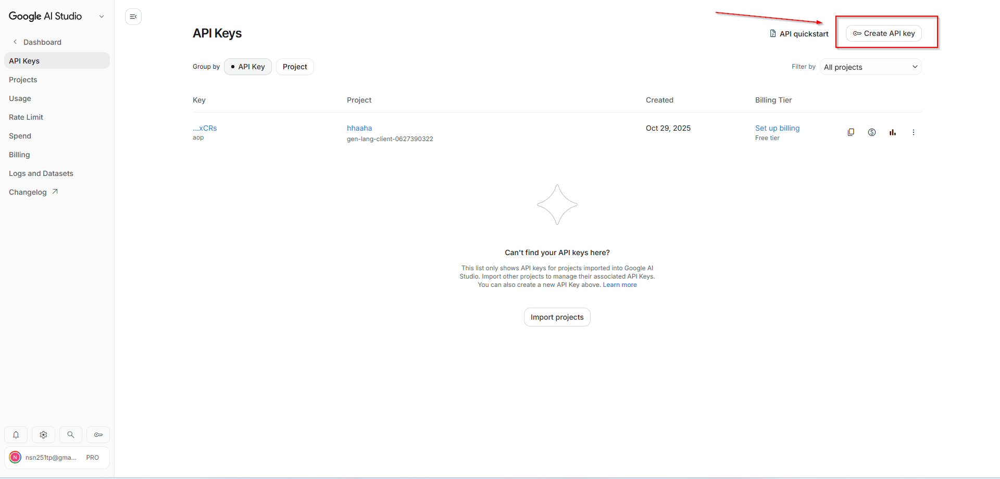

Làm theo từng bước bên dưới: lấy API key miễn phí → dùng prompt có sẵn để AI sinh code → chạy và hỏi thử. Không cần thuộc code, chỉ cần follow.
node -v)Từ Google AI Studio — chỉ mất khoảng 1 phút.
API key giống như mật khẩu để gọi Gemini. Bấm nút dưới để mở Google AI Studio, rồi làm theo ảnh minh hoạ:

Một đoạn “đề bài” viết sẵn để AI hiểu chính xác cần dựng gì.
Chúng ta không gõ code từ đầu. Thay vào đó, đưa cho AI một prompt chuẩn mô tả đầy đủ dự án — AI sẽ sinh toàn bộ code. Sao chép prompt dưới đây:
Bạn là senior Node.js developer. Hãy xây cho mình một RAG chatbot hoàn chỉnh bằng Node.js để tra cứu dữ liệu từ file Excel và PDF.
TECH STACK:
- Node.js (CommonJS, dùng require)
- Google Gemini qua package @google/genai: embedding model "gemini-embedding-001", generation model "gemini-3.1-flash-lite"
- Vector store: một file JSON (store/vectors.json) + hàm cosine similarity tự viết (KHÔNG dùng ChromaDB hay database ngoài)
- Đọc Excel bằng package "xlsx", đọc PDF bằng package "pdf-parse"
- Web server bằng "express" + "multer" (file upload lưu vào thư mục uploads/); UI trong public/
- Render câu trả lời dạng markdown trên UI bằng package "marked"
- Đọc API key từ .env qua "dotenv" (biến GEMINI_API_KEY)
CẤU TRÚC FILE (tạo đầy đủ):
- package.json: script "start" chạy server.js, dùng ĐÚNG các version sau:
"dependencies": {
"@google/genai": "^0.14.0",
"dotenv": "^16.4.5",
"express": "^4.19.2",
"marked": "^18.0.6",
"multer": "^1.4.5-lts.1",
"pdf-parse": "^1.1.1",
"xlsx": "^0.18.5"
}
- config.js: gom mọi hằng số (tên model, đường dẫn store, chunk size 1800, overlap 160, batch size 80, top_k 8)
- src/extract.js: đọc file Excel (duyệt qua mọi sheet, trả về danh sách record theo từng row) và file PDF (trích text theo từng trang)
- src/chunk.js: chuyển record thành text và cắt nhỏ khi quá dài
- src/gemini.js: khởi tạo client Gemini, hàm embed theo batch và hàm generate
- src/store.js: đọc/ghi store/vectors.json, hàm cosine similarity, hàm search
- src/rag.js: ghép pipeline ingest và ask
- server.js: express app + các API endpoint
- public/index.html + public/app.js: giao diện web
RAG PIPELINE 5 bước, tách hàm rõ ràng:
1) Chunking: với Excel, mỗi row thành một text record dạng "Tên cột: giá trị | Tên cột: giá trị" (bỏ qua ô trống); với PDF, lấy text từng trang; record/trang nào dài quá 1800 ký tự thì cắt fixed-size với overlap 160 ký tự.
2) Embedding: gọi Gemini embedContent theo batch 80 record một lần, taskType "RETRIEVAL_DOCUMENT" khi index và "RETRIEVAL_QUERY" khi query.
3) Vector store: lưu mảng { text, embedding, source } vào store/vectors.json — source là { file, sheet, row } với Excel hoặc { file, page } với PDF; khi ingest file mới thì append thêm, không ghi đè dữ liệu cũ.
4) Similarity search: embed câu hỏi, tính cosine similarity với mọi chunk, cộng thêm keyword score (đếm số từ của câu hỏi xuất hiện trong chunk) thành hybrid score, lấy top_k = 8 chunk điểm cao nhất.
5) Generation: build prompt gồm các chunk retrieve được (kèm source) + câu hỏi; yêu cầu model CHỈ trả lời dựa trên context, nếu context không có thông tin thì trả lời đúng chuỗi "KHÔNG TÌM THẤY"; gọi generateContent với temperature 0.
API ENDPOINTS:
- POST /api/ingest: nhận file Excel hoặc PDF (multipart, field "file"), chạy chunking + embedding + lưu vector store, trả về { file, chunks }
- POST /api/ask: nhận JSON { question }, trả về { answer, sources: [{ ...source, score }] }
- GET /api/files: danh sách file đã nạp kèm số chunk của mỗi file
- POST /api/reset: xoá toàn bộ vector store
UI (public/):
- Khu upload file Excel/PDF + nút "Nạp vào hệ thống", có hiển thị trạng thái đang xử lý
- Khung chat: ô nhập câu hỏi + nút gửi, hiển thị câu trả lời render bằng "marked" (markdown → HTML), kèm danh sách source (file, sheet/dòng hoặc trang)
- Danh sách file đã nạp + nút reset dữ liệu
YÊU CẦU KHÁC:
- Xử lý lỗi rõ ràng: thiếu API key, file upload không phải Excel/PDF, hỏi khi store rỗng → trả về message dễ hiểu
- Tạo sẵn file .env.example và .gitignore (bỏ qua node_modules, .env, store/, uploads/)
Hãy tạo đầy đủ tất cả các file trên, sau đó hướng dẫn mình các lệnh để cài đặt và chạy.
Dán prompt, Antigravity tự tạo toàn bộ file — bạn không cần tự lưu.
ba-na-rag).rag.js giúp mình”, hoặc “mình gặp lỗi này…”.
Tạo file .env ở thư mục gốc dự án.
Tạo file tên .env, dán API key của bạn vào:
GEMINI_API_KEY=dán_api_key_của_bạn_vào_đây.env vào file .gitignore để không đẩy key lên GitHub.
Hai lệnh trong terminal, tại thư mục dự án.
Cài các thư viện:
npm installKhởi động server:
npm startMở trình duyệt tại:
http://localhost:3000Đây là lúc thấy RAG hoạt động thật.